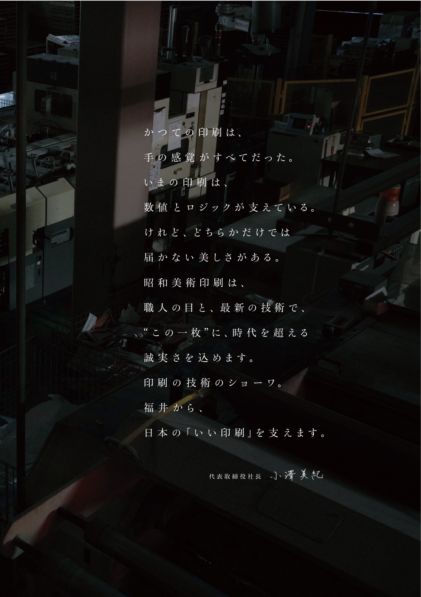

About
企業情報
Statement
かつての印刷は、手の感覚がすべてだった。
いまの印刷は、数値とロジックが支えている。
けれど、どちらかだけでは届かない美しさがある。
昭和美術印刷は、職人の目と、最新の技術で、
“この一枚”に、時代を超える誠実さを込めます。
印刷の技術のショーワ。
福井から、日本の「いい印刷」を支えます。
代表取締役社長
小澤 美紀

Overview
会社概要
| 商号 | 昭和美術印刷株式会社 |
|---|---|
| 代表者 | 代表取締役会長 小澤 明 代表取締役社長 小澤 美紀 |
| 創業 | 昭和46年6月7日（1971年） |
| 資本金 | 1,000万円 |
| 本社所在地 | 〒910-0822 福井県福井市玄正島 8-23-1 |
| 事業内容 | 総合印刷業（チラシ・カタログ・パンフレット・ポスター・カレンダー・パッケージ・書籍・雑誌などの企画、制作、印刷、加工、製本、配送） |
Locations
拠点一覧
History
沿革
1971
昭和美術印刷株式会社を創業。福井市内にて印刷事業を開始
1978
本社工場を現在地（大瀬町）へ移転・拡張。生産体制を強化
1985
オフセット輪転印刷部門を新設。大量・高速印刷の受注を開始
1993
DTP・プリプレス部門を設立。デジタル製版に対応
1999
上中工場を開設。製本・加工ラインを増強
2003
東京営業所を開設。首都圏の顧客基盤を拡大
2008
オンデマンド印刷システムを導入。小ロット・バリアブル印刷に対応
2012
京都・金沢営業所を相次いで開設。北陸・関西エリアの営業体制を確立
2018
環境配慮型印刷に取り組み、FSC認証を取得
2023
デジタルコンテンツ制作への対応を開始。印刷と連動したメディア展開を支援